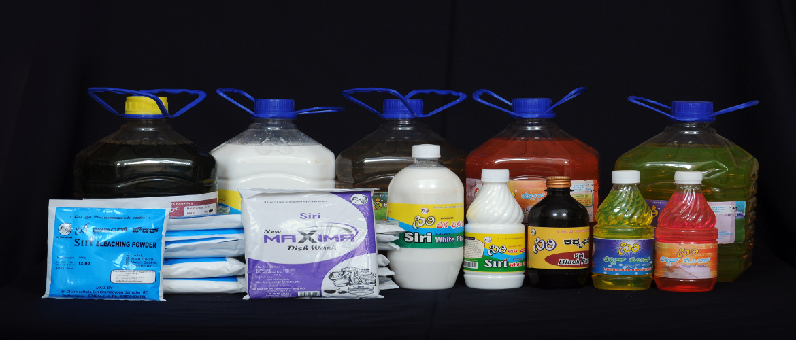

In the Food Sector, the company provides infrastructure and marketing support for Pickles, Squashes and Savories.
Food ProductsTo Cater to the needs of growing population SIRI has several units which produce various types of readymade garments like Shirts, Children wears, Ladies Garments, Hospital Uniforms, School Uniforms.
Cloths and Garments

In the Chemical sector the products covered are Phenyls, liquid soaps, bleaching powder, raw agarbathi and perfumed agarbathi.
Cleaning ProductsIn the Chemical sector the products covered are cleaning agents, and raw and perfumed agarbathis.
Agarbatti